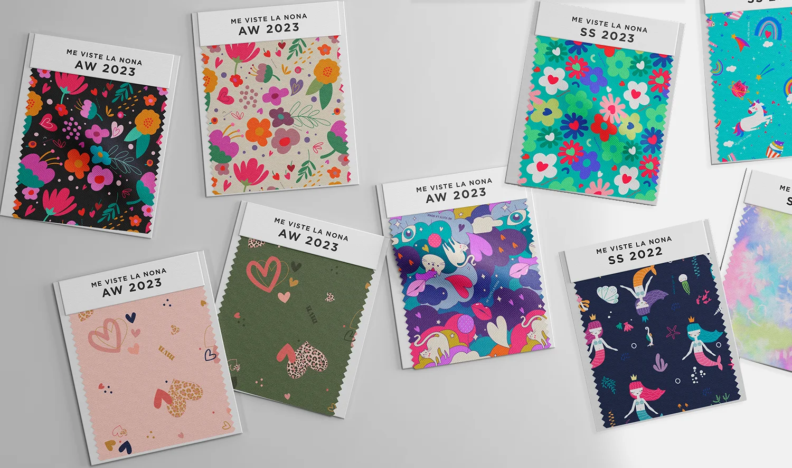
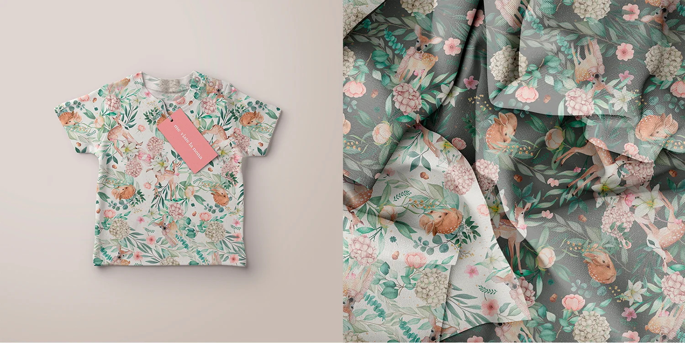
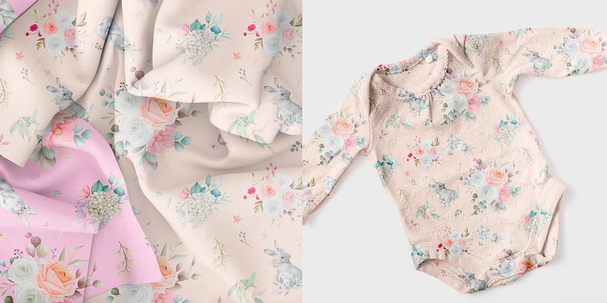
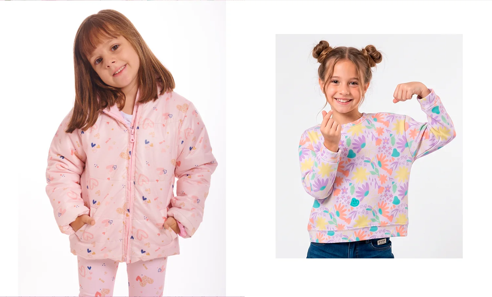
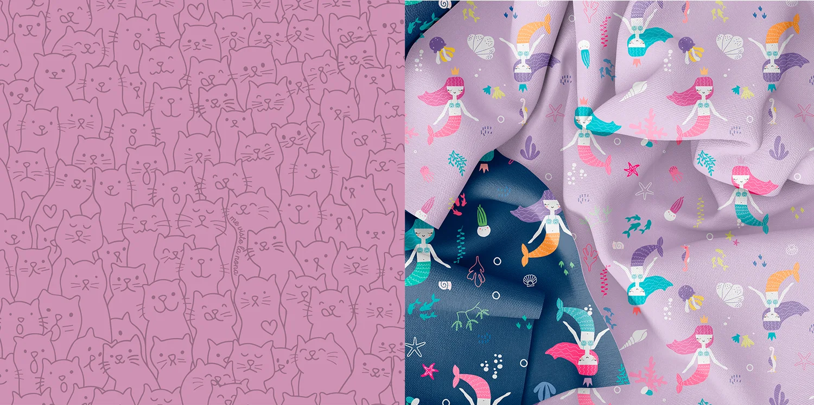
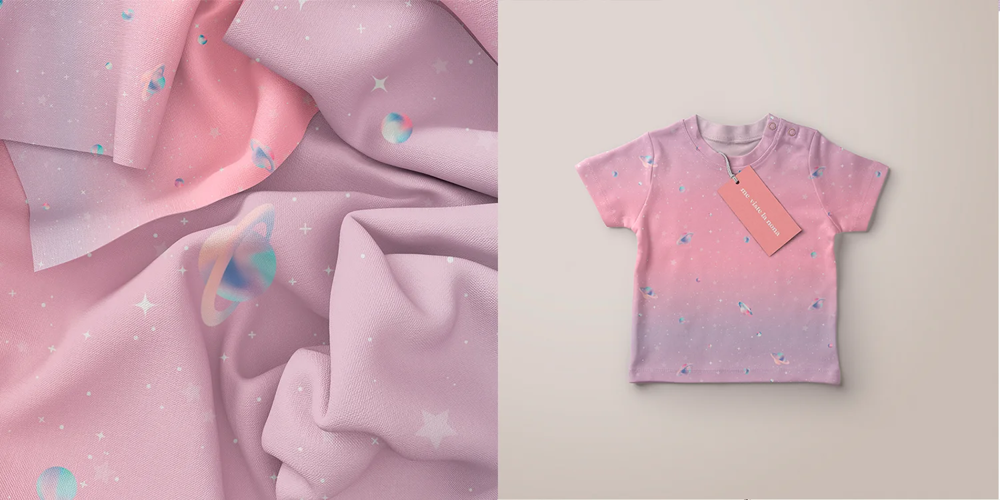
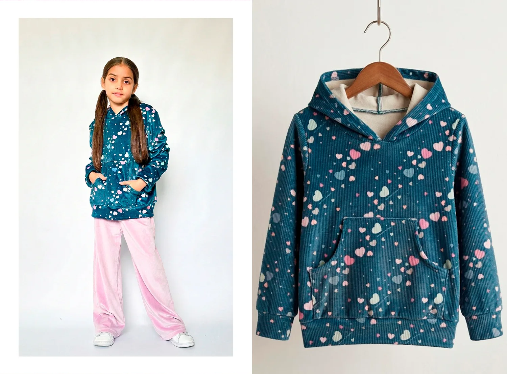
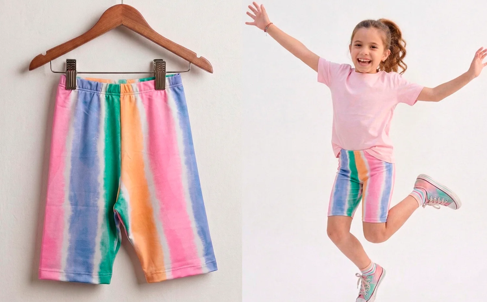
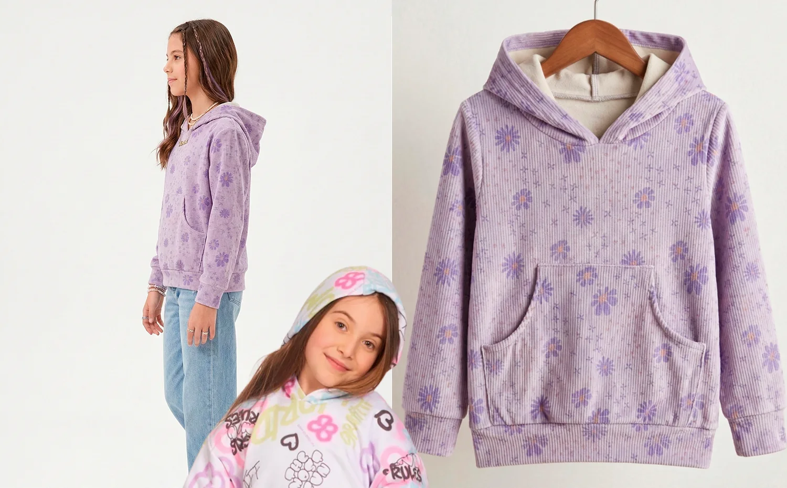
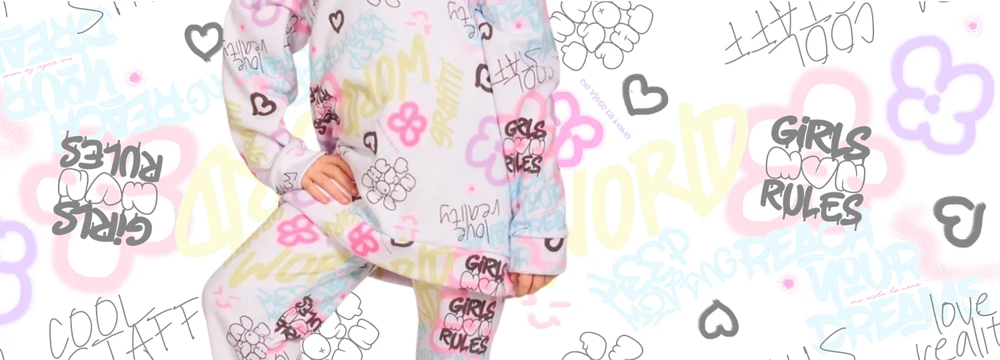
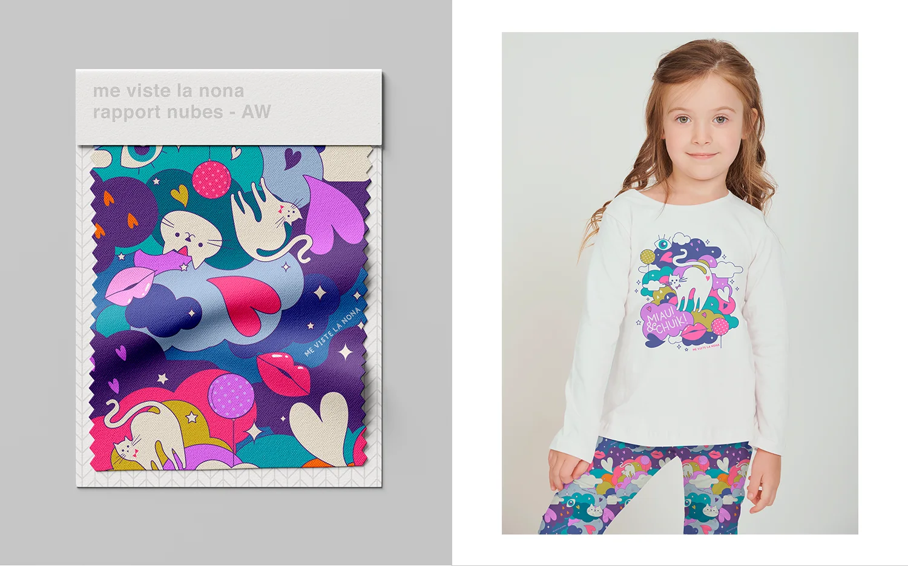
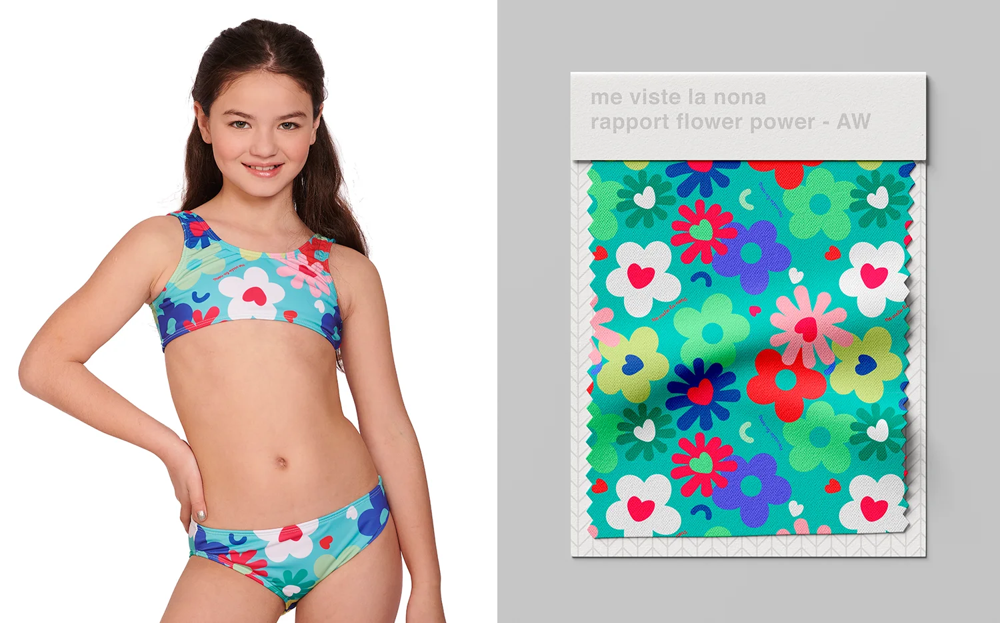
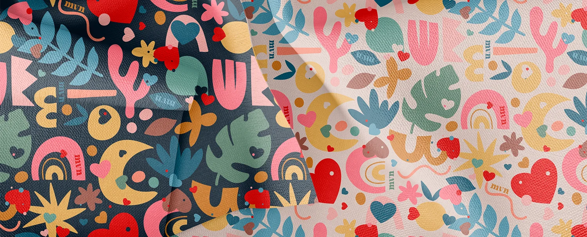
Diseñamos estampas y rapports originales, pensados para repetir sin costuras y darle personalidad propia a cada colección. De la paleta al mockup sobre prenda, con criterio textil de punta a punta.












